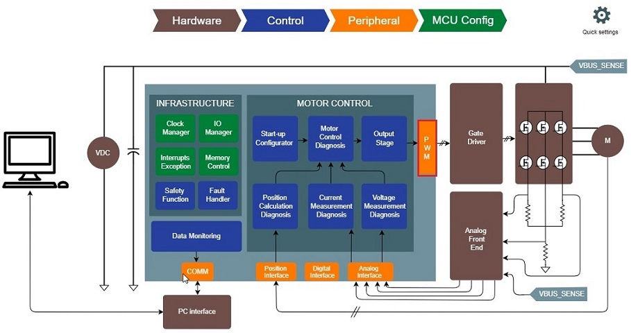
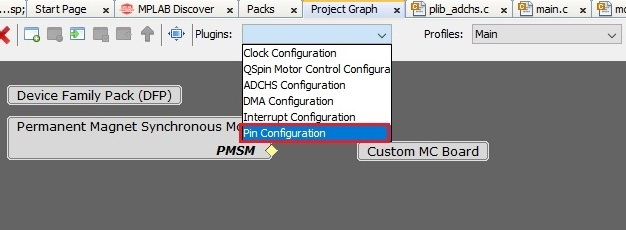
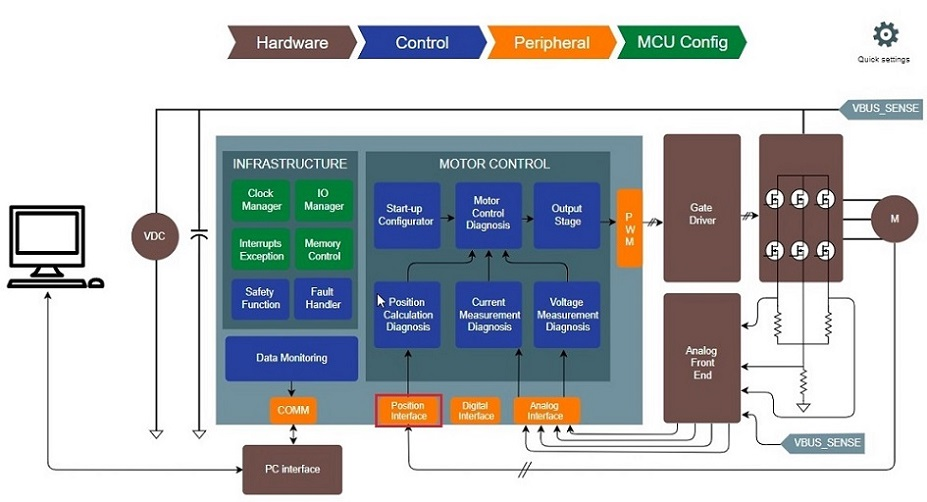

Configuring Peripheral Modules
This section describes how to configure MCU peripherals for motor control application projects with Harmony Qspin.
Setting PWM Interface
The following section describes the PWM interfaces and how it can be configured using Harmony Qspin.
The three-phase actuation voltage is applied employing the Space Vector Pulse Width Modulation (SVPWM).
Figure shows a conceptual diagram of Analog to digital conversion.
The software essentially has to perform following tasks:
-
Set the PWM unit and channels to be used to modulate three-phase voltages.
-
Configure PWM peripheral's frequency, dead-time, fault management, etc.
In Harmony Qspin PWM Interface can be set in following steps.
-
Launch PWM Interface by clicking on the block.
 -
Configure PWM interface.

Setting Position Interface
The following section describes the position interfaces and how it can be configured using Harmony Qspin.
For sensored Field Oriented Control, the position sensor interface has to be configured to process rotor position signals.
The software essentially has to perform following tasks:
-
Set the peripheral unit and channels to be used to for rotor position signals.
-
Configure rotor position interface peripheral.
-
Launch Position Interface by clicking on the block.
 -
Configure Position interface.